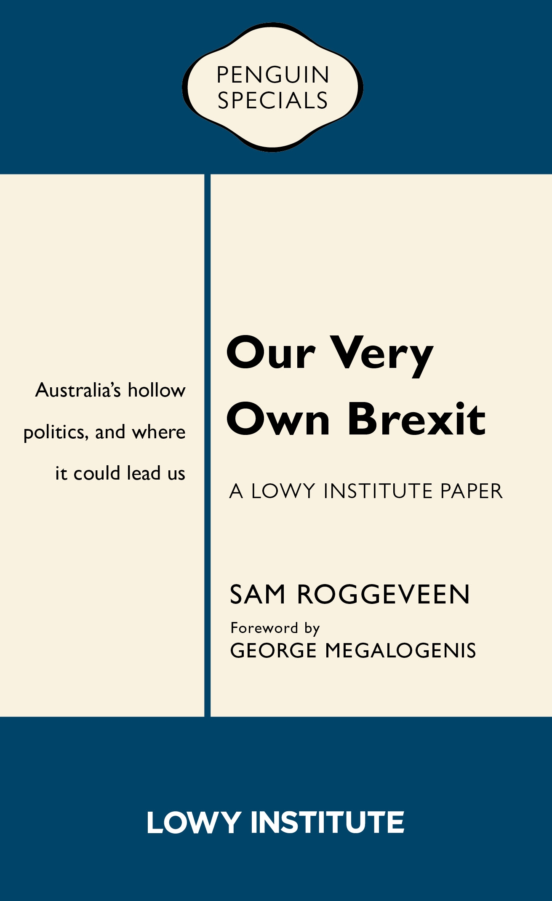

In good bookstores everywhere – at a very reasonable priceCross-posted from the Lowy Institute Blog.
Instead of munching popcorn at the political theatre, citizens’ assemblies would give the community a chance to reflect.
In what we now see in retrospect as something of a political “golden age” – say from the early 20th century through to the 1980s or so – political parties were the institution through which the political aspirations of different sections of the community were articulated and conveyed to the commanding heights of government. Millions of members joined those parties, which were embedded in the community alongside churches, unions, and business associations.
Yet as Sam Roggeveen has described in Our Very Own Brexit, “hollowing out” has now inverted that process. Senior officers of the parties now comprise a political caste, the majority of whom secured their parliamentary position within their party’s career structure with scant achievements elsewhere.
Each party manages their “brand”, and politics has become a Punch and Judy show. We barrack for our side if we have one – or our point of view in innumerable improvised or staged culture-war skirmishes. We cheer and boo, tweet and retweet.
The governance that emerges from this is an uncanny mix of stasis and instability. Stasis because, at least when seeking their votes, each party hews to a small target strategy on policy while probing for ways to misrepresent and catastrophise their opponents’ policies and purposes. Instability because we the people so hate it all.
We tell ourselves that the pollies are only in it for themselves. There’s truth in that. But also evasion. They’re victims too. The lead players in the show could be living happier wealthier lives out of the madhouse. We fancy we deserve better than this as we sit in the stalls munching our popcorn. Indeed we do. Yet our clicks and our tweets – above all our votes – drive the whole system. Ultimately we decide who represents us and the terms on which they do.
The most significant achievement of Australian voters’ emphatic decision at the 2013 election was the abolition of carbon pricing, which had taken a decade of political struggle to be absorbed into the apparent political security of bipartisan consensus. Whenever a political party offers a skerrick of leadership – whenever they depart, however cautiously, from their traditional “small target” or “comms” strategies of relentless manipulation and tendentious evasion, they’re easy meat for the scare campaigns and outrage machines of their party political and ideological opponents.
Roggeveen’s definition of what constitutes “a Brexit” for his purposes is situated within his own, and the Lowy Institute’s focus on Australia’s external relations. I would characterise the UK’s Brexit moment and the US’s Trump moment more generally as the point at which the electorate perpetrated some action that the overwhelming bulk of the political class regarded in their heart of hearts as crazy.
If that’s your definition, then just as Australia led the world in various aspects of economic policy – such as income-contingent loans, community strategies on AIDS, and the strengthening and targeting of welfare – our rendezvous with political crazy predates its moment elsewhere in the Anglosphere by three years.
For the most significant achievement of Australian voters’ emphatic decision at the 2013 election was the abolition of carbon pricing. Its demise has plunged our energy sector into crisis and dysfunction. And it’s rarely noted by the commentariat (why am I not surprised?), but it’s also costing our budget more than $10 billion annually and rising.
Of course, simply painting the picture Roggeveen does is useful. Yet if he has any ideas about how we might fight our way out of this frightening situation, he’s not telling. Perhaps like so many others, he wants more “leadership”. Perhaps we need a hero – someone with immense political talents who, having clambered up the greasy pole, still wants to achieve something and retains the authority over their party, the parliament, and the community to achieve it.
But how likely is that in a political culture that almost never lets an act of leadership go unpunished?
The one thing that gives me some hope is the existence of another democratic tradition which has lain dormant in our political culture for centuries but remains healthy as a pillar of our legal system. Those empanelled on a jury represent us as our parliamentarians do. But they do so not by flattering us to win our vote, but more simply by being chosen from among us.
The makeup of a jury is more substantively representative than parliament, with far more of the young, the old, and the less well-healed. Selection by lot was a central mechanism through which the ancient Athenians secured the great political principle they called “isegoria” or equality of speech. It has been driven to extinction in the great political hollowing out.
We’ve learned to distrust those competing for our votes, and those with different ideologies. But when we meet together in citizens’ juries, our trust in each other comes flooding back. For instance, when around 250 Texan citizens chosen at random deliberated in 1996 on various questions including whether they should pay between $2 and $5 more for electricity to increase renewables’ market share. With 52% agreeing before deliberation, 84% agreed afterwards, with such exercises making a material contribution to Texas – under Governor George W. Bush – leading many other states and installing 1,000 megawatts of renewable energy generation.
The evidence suggests that similar methods would have demonstrated a contrast between the opinion of the people, and their considered opinion on Brexit. In late 2017, 50 Britons randomly selected to exemplify the referendum’s 52:48 Brexit vote swung to 40:60 against after deliberation, with not one of them swinging the other way. Something similar happened in a deliberative poll in 2010.
And yes, what evidence we have suggests that this mechanism offers a useful means of tackling Roggeveen’s specific concerns. Just three months ago America in One Room brought together a “state-of-the-art scientific sample” of 523 Americans for a weekend’s deliberation in small groups on five critical policy areas. As the organisers reported:
There were dramatic changes of opinion. The most polarizing proposals, whether from the left or the right, generally lost support, and a number of more centrist proposals moved to the foreground.
And for those seeking to avoid our very own Brexit, there’s good reason to take heart. The deliberations elicited a more welcoming position on both legal and illegal immigration, mostly due to a softening from the right. Deliberation reduced support for cutting refugee intake from 37% to 22% with Republicans’ support dropping from 66% to 34%. Republican support for increasing skilled immigration rose from 50% to 71% (and overall support from 60% to 80%). Republicans also shifted from 31% supporting low-skilled immigration for industries that need it to 66%, with overall support for this policy rising from 53% to 77%.
My conclusion from all this is that if we’re to avoid our next Brexit, according to my definition, we need to bring citizens’ assemblies into our existing constitution to check and to balance our parliamentary representatives. But existing politicians who’ve worked hard won’t let go of any power they’ve acquired lightly. The beauty of this agenda is that huge strides can be made from outside the system.
A privately funded but independently governed standing citizens’ assembly could surface the considered opinion of the people alongside all those polls that currently measure their unconsidered opinion. And the evidence suggests that swings taking place in such a body would affect voters and, in consequence, their elected representatives. I doubt the abolition of carbon pricing would have made it through the Senate once a citizens’ assembly had twigged to the unseriousness of what was to replace it.
Given that and the fact that the Lowy Institute is one of Australia’s best-funded think tanks, I’d like to see it take the lead. It could do so with a citizens’ assembly focused on immigration along the lines of America in One Room.
Though we have a decade’s experience of advisory citizens’ juries which is very promising, we’ve barely begun to fill out the repertoire of political institutions according to this alternative way of representing the people. But it’s possible to reimagine virtually every political institution to which electoral representation has given rise according to the alternative logic of isegoria or equality of speech.
The Lowy Institute could fund a standing citizens’ assembly on immigration. It could announce its intention to fund a citizens’ assembly whenever any Australian government was considering any combat deployment of Australian troops abroad. It could fund a joint citizen’s assembly of (say) 25 Australians and 25 East Timorese to deliberate together on the relations between our two countries. Despite the tiny size of Timor-Leste, such an exercise could have a powerful demonstration effect.
Some enterprising philanthropists might replicate the experiment somewhere where it really could change the course of global history. They might convene a citizens’ assembly of Chinese and American citizens to deliberate in the first instance, on the impasse the two countries find themselves at on trade. But that could be a precedent for numerous similar exercises on subjects about which Roggeveen is anxious. And he’s far from alone.
It’s not hard to identify problems we’d have to take into account in pursuing some of these courses. I’d rather have seen a citizens’ assembly on Timor-Leste a decade ago. And the Chinese Communist Party might be able to exercise a stronger influence on the Chinese representatives than America’s government could exercise on its own. But such obstacles are always encountered where we explore new territory. They almost never render us powerless. This one could be ameliorated, though not completely solved, by secret balloting.
Personally I can’t see a happy future for any of us if we don’t set our minds and our hearts on evolving institutions that are a little more hospitable to what Abraham Lincoln so sublimely summoned up just by naming them: the better angels of our nature.
There's a follow up to me and other reviewers by Sam here and a response by me.
Hi Nick,
good of you to keep pushing this idea of citizen juries and assemblies for things. Certainly worth a try. In Europe these things are becoming rather common. France just called one on the topic of climate change, an incredibly thorny question with lots of symbolism and rhetoric in the way of even seeing what would be sensible.
If these things take off though, special interests and the very rich are of course going to play these things. They will try and work out how to ensure these random citizens come up with the required answer. They will have a lot of resources available for doing so, trying different formats, different media-feeding campaigns to influence them, different processes for screening and informing participants, etc. Just like real juries in the US are now gamed ruthlessly, so too will manipulative attention turn to citizen initiatives if they threaten to derail private interest, as they would in the case of climate change or anything else that is worth having a citizen's initiative over really.
To prevent the whole thing from being hyjacked one would like to think of some standard protocol that seems to work well, ie a gold-standard for juries and assemblies.
Indeed.
But all things in their time. The straighteners and purifiers are hard at work here.
In the meantime my goal is to naturalise these mechanisms in the public mind. But of course the powerful will be doing what the powerful do.
There's a pattern I think – though I'd be the last to claim that it's universal – that we often see the best of big innovations particularly innovations in openness early on. The best are often early adopters.
Then the baddies turn up …
But then when they do we here at Troppo will be ready.
We'll have arguments. We'll win the argument!
And that is usually enough to make sure that right triumphs – as it did in Robespeare's time, and Attila the Hun, Herod and all manner of other powerful people.
Forgot to include the link I intended which is here.
The whole site is full of people who relate to the challenge you've set out.
You'll find me being a bit impatient with it – not because I don't recognise the need to meet it, but because
1) I think it's the next task. Certainly not to be ignored now, but not the highest priority.
2) Quite a few of the protagonists are a tad too pure for my taste. The protocols we pursue can't be detailed recipies cooked up for the (self)satisfaction of the cognoscenti. They have to embody simple principles with appeal to the public as it's they ultimately who must support them.
thanks for the link. Yes, nice to see them trying to work some things out. They could indeed use your input I think, though I suspect what might turn out to be important is stuff normally not considered by 'theorists' like just how one approaches the people 'selected by lot' (ie how to persuade them to join in). Or just where one finds the 'base population' to take draws from (Those who turn up to a meeting? postcodes in the area? Electoral rolls? The census? A population register?). How one organises the rooms and agenda is other 'stuff' that one also wants to have some idea about what a good protocol looks like. If none of that matters, that is very important to know too.
Essentially one wants a protocol book for how to do this from start to finish.